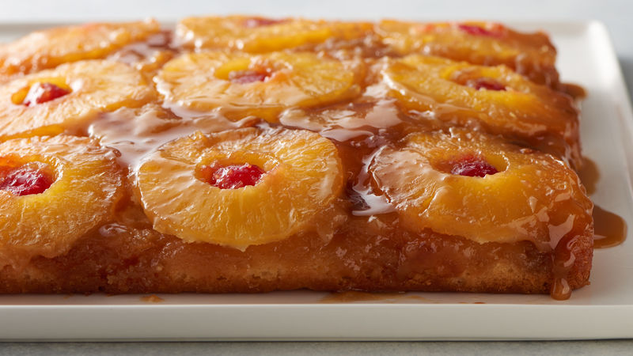

Queen Pineapple Cake

So freakin good you'll worship it!
Ingredients:
- 1/4 cup butter
- 2/3 cup packed brown sugar
- 9 slices of pineapple
- optional: marashino cherries
- 1 1/3 cups of all purpose flour
- 1 cup granulated sugar
- 1/3 cup shortening
- 1 1/2 tsps baking powder
- 1/2 tsps salt
- 3/4 cup milk
- 1 egg
Steps:
- Preheat oven to 350 F.
- In a sqaure pan, melt the butter in the oven and then sprinkle brown sugar evenly over the melted butter, then arrange the pineapple slices on top of the brown sugar.
- In a medium bowl, beat remaining ingredients with an electric mixer on low for 30 seconds, then beat on high for 3 minutes.
- Pour batter over the pineapple and cherries.
- Bake for 50-55 minutes or until toothpick comes out clean.
- Serve warm and enjoy!
What a heavenly delight!